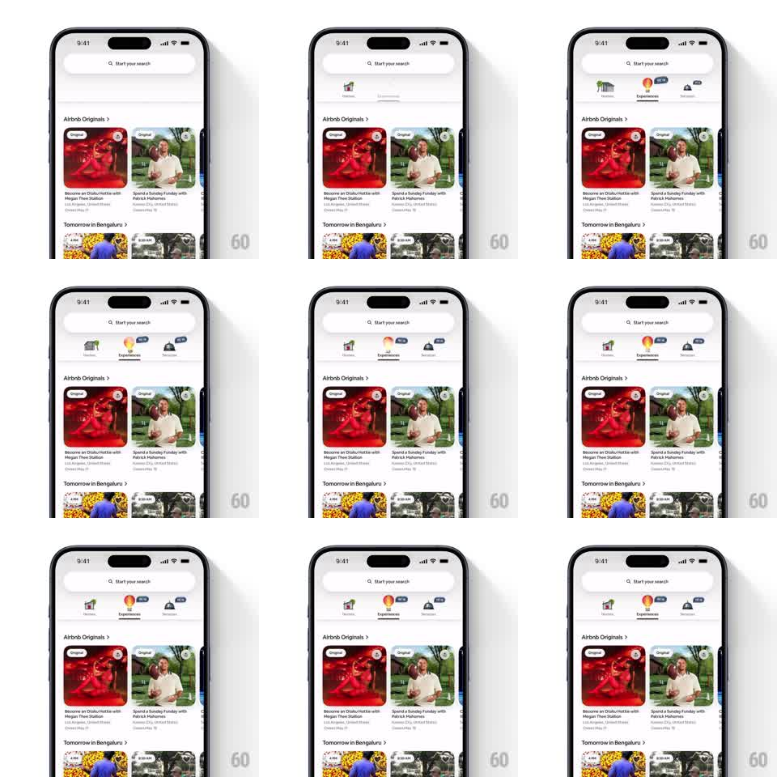

Media
Frame-by-frame

Rebuild this animation 1:1: Airbnb's tab-bar spotlight - the 3D tab icons (Homes house, Experiences hot-air balloon, Services bell) rise into the bar one by one, and the Experiences balloon gently bobs and rotates with a blue "NEW" pill to draw attention to the tab.

Rebuild this animation 1:1: Airbnb's tab-bar spotlight - the 3D tab icons (Homes house, Experiences hot-air balloon, Services bell) rise into the bar one by one, and the Experiences balloon gently bobs and rotates with a blue "NEW" pill to draw attention to the tab. ## Integration Integration: stack-agnostic spec - springs given as stiffness/damping, timed motions as duration + curve; map every value to your framework and animation library of choice. ## Scene White Airbnb home feed (search pill on top, "Airbnb Originals" and "Tomorrow in Bengaluru" card rails). At the top under the search bar, a three-item tab strip: Homes (3D house), Experiences (3D hot-air balloon with a blue "NEW" pill), Services (3D bell). The balloon is the animated focus. ## Motion spec Pattern: tab-icon entrance with attention loop on the new tab. - The three icons drop in from above the strip with a spring (~280/18, 250ms, 100ms stagger left to right); labels fade in under them. - The "NEW" pill pops onto the Experiences balloon (scale 0 -> 1.1 -> 1.0, spring ~340/18). - Attention loop on the balloon (repeating, 3s cycle): it lifts (translateY 0 -> -5pt), rotates slightly (+/-4deg), and settles; the pill keeps a soft pulse (scale 1.0 -> 1.06 -> 1.0). - Homes and Services icons stay static; only the balloon loops. - On tab switch, the active icon does a quick squash-stretch (scale 1 -> 0.9 -> 1, 150ms). ## Calibration - The balloon's bob is small and slow - playful, not jittery. - The NEW pill stays attached to the balloon through every motion (no drift). ## Reduced motion Icons fade in once; the balloon and pill are static; no loop. ## Don't miss - The 3D icons have soft shading and tiny shadows - keep the rendered look, no flat glyphs. - Only Experiences carries the NEW pill and the motion loop; the other two tabs are quiet.